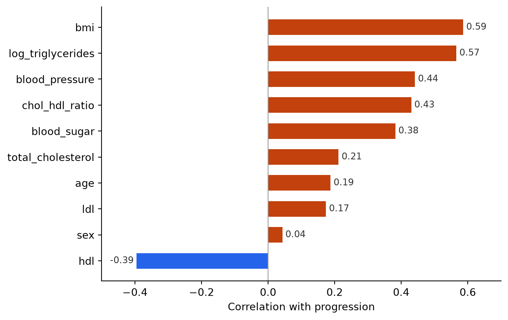
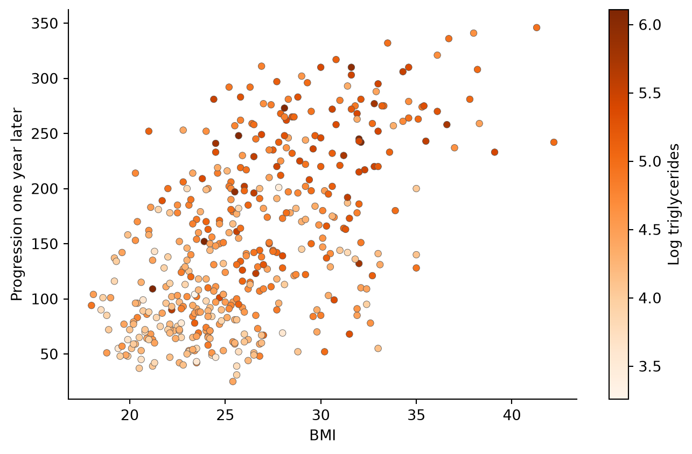

import pandas as pd
import matplotlib.pyplot as plt
from sklearn.datasets import load_diabetes
from sklearn.linear_model import LinearRegression
from sklearn.model_selection import KFold, cross_val_scoreWhat predicts how diabetes progresses in a year?
python
regression
Diabetes does not progress at the same pace for everyone. Some patients get noticeably worse within a year, while others barely change. In this post I use a classic medical dataset of 442 patients to ask a simple question: which routine measurements taken at a check-up best predict how much the disease will progress over the following year?
Data: Diabetes dataset from Efron, Hastie, Johnstone and Tibshirani (2004), “Least Angle Regression”, Annals of Statistics 32(2), distributed with scikit-learn (BSD-3-Clause licence).
The dataset ships inside scikit-learn, so there is no data file to download and nothing extra to install.
The data
scikit-learn stores the blood test columns under the names s1 to s6, which tell a reader nothing. I load the unscaled version, so every value is in its original units, and give each column a name that says what it measures.
raw = load_diabetes(scaled=False, as_frame=True)
diabetes = raw.frame.rename(columns={
"bp": "blood_pressure",
"s1": "total_cholesterol",
"s2": "ldl",
"s3": "hdl",
"s4": "chol_hdl_ratio",
"s5": "log_triglycerides",
"s6": "blood_sugar",
"target": "progression",
})
print(diabetes.shape)
diabetes.head()(442, 11)| age | sex | bmi | blood_pressure | total_cholesterol | ldl | hdl | chol_hdl_ratio | log_triglycerides | blood_sugar | progression | |
|---|---|---|---|---|---|---|---|---|---|---|---|
| 0 | 59.0 | 2.0 | 32.1 | 101.0 | 157.0 | 93.2 | 38.0 | 4.0 | 4.8598 | 87.0 | 151.0 |
| 1 | 48.0 | 1.0 | 21.6 | 87.0 | 183.0 | 103.2 | 70.0 | 3.0 | 3.8918 | 69.0 | 75.0 |
| 2 | 72.0 | 2.0 | 30.5 | 93.0 | 156.0 | 93.6 | 41.0 | 4.0 | 4.6728 | 85.0 | 141.0 |
| 3 | 24.0 | 1.0 | 25.3 | 84.0 | 198.0 | 131.4 | 40.0 | 5.0 | 4.8903 | 89.0 | 206.0 |
| 4 | 50.0 | 1.0 | 23.0 | 101.0 | 192.0 | 125.4 | 52.0 | 4.0 | 4.2905 | 80.0 | 135.0 |
Each row is one patient. The first ten columns were measured at the start of the study: age, sex, body mass index (BMI), average blood pressure and six blood test results. The last column, progression, is a score of how far the disease advanced one year later. Higher means worse. Sex is coded as 1 or 2, and the original source does not say which is which, so I treat it as a label rather than read anything into it.
What the patients look like
summary = (
diabetes
.describe()
.T[["mean", "std", "min", "max"]]
.round(1)
)
summary| mean | std | min | max | |
|---|---|---|---|---|
| age | 48.5 | 13.1 | 19.0 | 79.0 |
| sex | 1.5 | 0.5 | 1.0 | 2.0 |
| bmi | 26.4 | 4.4 | 18.0 | 42.2 |
| blood_pressure | 94.6 | 13.8 | 62.0 | 133.0 |
| total_cholesterol | 189.1 | 34.6 | 97.0 | 301.0 |
| ldl | 115.4 | 30.4 | 41.6 | 242.4 |
| hdl | 49.8 | 12.9 | 22.0 | 99.0 |
| chol_hdl_ratio | 4.1 | 1.3 | 2.0 | 9.1 |
| log_triglycerides | 4.6 | 0.5 | 3.3 | 6.1 |
| blood_sugar | 91.3 | 11.5 | 58.0 | 124.0 |
| progression | 152.1 | 77.1 | 25.0 | 346.0 |
Table 1 shows a wide mix of patients, aged from 19 to 79, with an average BMI of about 26. The outcome varies a lot too. Progression scores run from 25 to 346, with an average of around 152. That spread is what makes the question worth asking: something is separating the patients who get much worse from those who do not.
Which measurements go with faster progression?
corr = (
diabetes
.drop(columns="progression")
.corrwith(diabetes["progression"])
.sort_values()
)
colours = ["#c2410c" if r > 0 else "#2563eb" for r in corr]
fig, ax = plt.subplots(figsize=(7, 4.5))
bars = ax.barh(corr.index, corr.values, color=colours, height=0.6)
ax.bar_label(bars, fmt="%.2f", padding=3, fontsize=9, color="#333333")
ax.axvline(0, color="#999999", linewidth=0.8)
ax.set_xlabel("Correlation with progression")
ax.spines[["top", "right"]].set_visible(False)
ax.set_xlim(-0.5, 0.7)
plt.tight_layout()
plt.show()
Two measurements stand out in Figure 1: BMI (0.59) and log triglycerides (0.57). Patients who carried more weight or had more fat in their blood at the start tended to get worse faster. Blood pressure and the cholesterol-to-HDL ratio come next.
One bar points the other way. HDL, often called “good” cholesterol, has a negative correlation (-0.39), so patients with higher HDL tended to progress more slowly. That matches what doctors would expect, which is a reassuring sign the data behaves sensibly. Age and sex, on the other hand, barely matter on their own.
Even the strongest correlation is well short of 1, though. No single measurement comes close to telling the whole story.
The two strongest signals together
fig, ax = plt.subplots(figsize=(7, 4.5))
points = ax.scatter(
diabetes["bmi"],
diabetes["progression"],
c=diabetes["log_triglycerides"],
cmap="Oranges",
s=22,
edgecolors="#555555",
linewidths=0.3,
)
fig.colorbar(points, ax=ax, label="Log triglycerides")
ax.set_xlabel("BMI")
ax.set_ylabel("Progression one year later")
ax.spines[["top", "right"]].set_visible(False)
plt.tight_layout()
plt.show()
Figure 2 puts the two leading measurements side by side. Progression rises with BMI, and the darkest points, the patients with the highest triglycerides, sit mostly in the upper right. The scatter is wide, though. Plenty of patients with a high BMI stayed stable, which is another hint that BMI alone is not enough.
How much can we actually predict?
To put a number on this, I fit linear regression models that use more and more measurements, and score each one with R², the share of the variation in progression the model explains. A score of 1 would be perfect prediction and 0 would be no better than guessing the average.
To keep the scores honest, I use 5-fold cross-validation. The data is split into five parts, and each model is trained on four and tested on the fifth, taking turns until every part has been the test set once. Every score therefore comes from patients the model did not see during training.
X = diabetes.drop(columns="progression")
y = diabetes["progression"]
folds = KFold(n_splits=5, shuffle=True, random_state=42)
feature_sets = {
"BMI only": ["bmi"],
"BMI + triglycerides": ["bmi", "log_triglycerides"],
"BMI + triglycerides + blood pressure": ["bmi", "log_triglycerides", "blood_pressure"],
"All ten measurements": list(X.columns),
}
results = []
for name, columns in feature_sets.items():
scores = cross_val_score(LinearRegression(), X[columns], y, cv=folds, scoring="r2")
results.append({
"Model": name,
"Measurements used": len(columns),
"Mean R²": round(scores.mean(), 2),
})
pd.DataFrame(results)| Model | Measurements used | Mean R² | |
|---|---|---|---|
| 0 | BMI only | 1 | 0.32 |
| 1 | BMI + triglycerides | 2 | 0.43 |
| 2 | BMI + triglycerides + blood pressure | 3 | 0.45 |
| 3 | All ten measurements | 10 | 0.48 |
Table 2 shows that BMI on its own explains about a third of the variation in progression. Adding triglycerides lifts that to around 0.43, and blood pressure nudges it to about 0.45. Using all ten measurements reaches roughly 0.48. The first two measurements do most of the work, and the other eight add very little on top.
What I found
- BMI and triglycerides are the strongest early warning signs in this dataset. Higher values at the start go with faster progression over the next year.
- HDL cholesterol works in the opposite direction, with higher levels linked to slower progression.
- Two measurements get a simple model most of the way. Adding the remaining eight improves the fit only slightly.
- Even the best model explains less than half of the variation. More than half of what separates patients comes from things this dataset does not measure, such as treatment, diet, activity or genetics.
These are correlations from 442 patients, not causes. They show what tends to go together, not what would happen if a patient changed one number. What the analysis does show is that a couple of routine measurements carry real information about where a patient is heading, and that much of the story still lies outside the data.